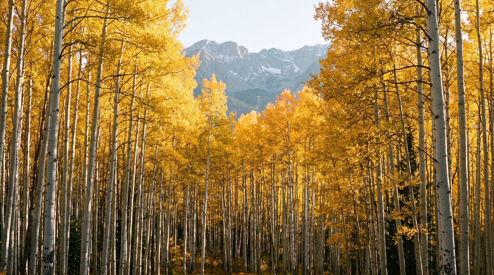

Protect what makes Aspen wild.

Drought and low snowpack failed the berry and acorn crops that Colorado's black bears depend on. With nothing on the mountain, they came down to us.
Aspen has spent years, correctly, on locking down trash. Nobody is working on the other half of the problem: the wild food supply itself. That is the gap we exist to close.
Satellite imagery and parcel data rank sites on soil, slope, aspect, water and existing cover, and identify who owns each one.
Gambel oak, serviceberry, chokecherry and hawthorn, established well away from homes and trails.
Most visitors have never been told how to behave in bear country. Plain, unmissable education for the people who need it.
Feeding bears is illegal in Colorado, and for good reason: it concentrates animals, creates dependence, and teaches them to associate people with food. We do the opposite, and the difference is not a technicality.
Partner businesses get the decal for the window, a listing on this site, and materials that answer the bear questions visitors actually ask at the counter. No fee to join in the first year.